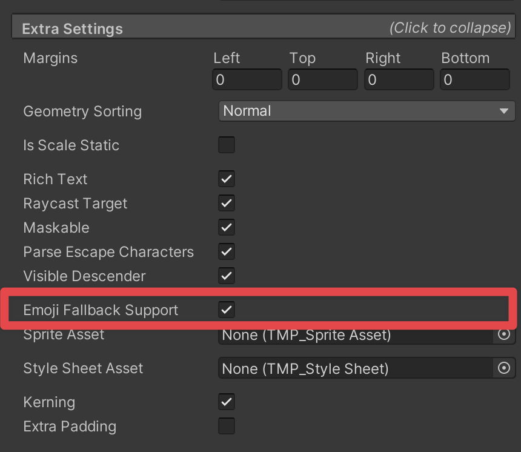

文本可以包含彩色字形（Color Glyphs）和 Emoji。导入含彩色 Emoji 的字体文件，将其设为备用 Emoji 文本资源即可。
设置彩色 Emoji（Set up color emojis）
创建彩色字体资源并加入 TMP Settings 的 Fallback。此设置与图示的 Project Settings / TextMeshPro / Settings 相同。
- 在项目中导入含彩色 Emoji 的字体文件。
- 在 Assets 文件夹中右键，选择 Create > TextMeshPro > FontAsset > Color。这会使用正确的 Shader（Sprite）和图集渲染模式（Color）创建字体资源。
- 打开 TMP Settings 资源，或通过 Edit > ProjectSettings > TextMesh Pro > Settings 打开设置。
- 将 Emoji 字体资源加入 Fallback Emoji Text Assets 列表。
另一种方式是直接把彩色字体资源赋给文本对象，但需关闭文本组件 Extra Settings 中的 Emoji Fallback Support。
在文本中插入 Emoji（Include emojis in text）
可以用以下方式插入 Emoji：
- 通过 Unicode 插入。原文以
\U00001f60表示笑脸；译注：此示例不足 8 位，应核对目标 Emoji 的实际码点，不能直接视为有效的 C# UTF-32 转义。 - 使用操作系统的虚拟键盘。
- 从外部文本编辑工具复制 Emoji，粘贴到文本输入框。
有关 Unicode Emoji 标准，参阅原文链接（this link）。
控制 Emoji 回退搜索（Emoji Fallback Search）
Emoji Fallback Support 控制系统到哪里查找 Unicode 标准定义为 Emoji 的字符。
启用时（默认），优先在 Fallback Emoji Text Assets 列表中查找 Emoji 字符。
禁用时，优先查找赋给文本组件的主字体资源（Primary Font Asset）。
也就是说，当字符属于 Emoji 时，此选项会调整搜索优先级，让 Fallback Emoji Text Assets 列表先参与查找。
如果主字体含黑白 Emoji，此选项也能控制究竟使用主字体中的 Emoji，还是备用列表中的 Emoji。
修改 Emoji Fallback Support：
- 在 Hierarchy 中选中 Text (TMP)。
- 在 Inspector 中展开 Text (TMP) 的 Extra Settings，切换 Emoji Fallback Support。

限制（Limitations）
彩色 Emoji 功能具有以下限制：
- 不支持部分 OpenType 特性，例如链式上下文（Chain Context）和单字形替换（Single Substitution）。
- 不支持使用 AAT 格式的 Apple 字体；AAT 是 OpenType 的前身。
- 不支持 SVG 彩色字形。
- Dynamic OS FontAsset 在部分 iOS 设备上支持有限。OS X 和部分 iOS 设备上的 Apple Color Emoji 字体可以正常使用；较新 iOS 设备上的 Apple Color Emoji-160px 不受支持，因为其中 Emoji 使用 JPEG 编码，而 FreeType 不支持这种格式。
- Unity 2023.1 之前，通过 Inspector 添加 UTF-32 会报错，Emoji 也不会显示在 Inspector 中。